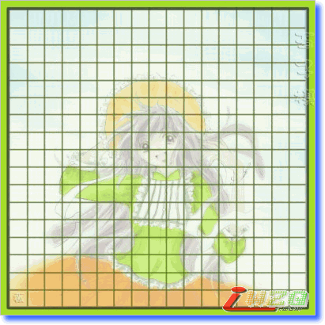
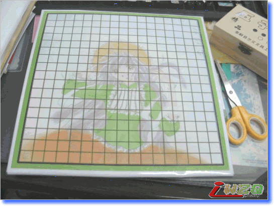
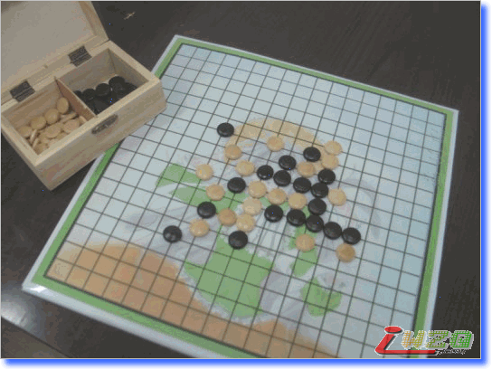
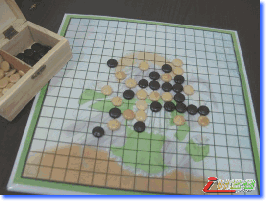
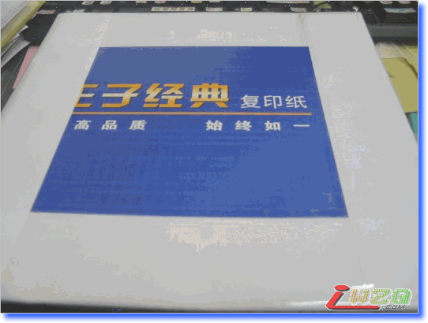

自制的五子棋棋盘^-^
#1 自制的五子棋棋盘^-^ 作者：有志青年 发表时间：2008-4-4 10:14:13
最近返璞归真了，重回儿童时代的游戏——跳棋、五子棋
每个中午基本上都是在棋盘上厮杀，乐此不疲
好吧厮杀夸张了，因为某某两人的棋艺实在烂- -||
但是属于越挫越勇越输越有干劲，基本上我是陪练OTL
啊，8对，8素陪练，偶素像SAI一样滴下指导棋啊，哈哈哈
发展到后来，兴致很高的我们很56滴制定了办公室午休游戏计分方法
每次三种游戏：跳棋、五子棋、扑克，然后赌注是“水舞功夫”哈哈
总结，迄今为止，跳棋一盘未输，五子棋输不过三
实在不是我厉害，实在是某MIU和某酸的棋艺烂
但不得不承认，在扑克方面，我就一丁点儿的慧根都没有- -||每次都是垫底OTL
所以我坚信，扑克是抽牌七分运气打牌三分技术，技术含金量8高
哪里像跳棋和五子棋，完全靠实力哇实力！哇哈哈哈~
汗一下某MIU买的五子棋，棋谱居然是长方形格子OTL
无奈下，我们打算自己画棋盘
第一次，用A3白纸黑色水笔画的格子。
BS下某酸，居然连点星位都点错了，汗哇~ 本来只是五子棋又不是围棋
不过虽然我们很想学SAI那么有型滴执子起落，只不过这个棋子乱没质感>
啦啦啦~ PS的棋盘
底图是偶的搁浅工程--小鸠

啦啦啦~ 刚做好的棋盘
表面是打印出来的图，嘿嘿非常感谢CJJ的彩打>

啦啦啦~ 开始用咯~
用新棋盘下的第一局，俺胜MIU~
纪念下~ ^^


啦啦啦~ 翻过来~
哈，是王子复印纸的纸箱盖子
哈哈，忽然想起，上次做杯垫用的是未来复印纸的箱子>-

#2 Re:自制的五子棋棋盘^-^ 作者：阿贝尔 发表时间：2008-4-4 12:15:21
谁会用word制作五子棋棋谱啊?有志会吗?教教我#3 Re:自制的五子棋棋盘^-^ 作者：有志青年 发表时间：2008-4-4 12:16:26
本站有word棋谱下载呀，是图片插在其中，如果用纯粹word做棋谱，打印出来？#4 Re:自制的五子棋棋盘^-^ 作者：nara 发表时间：2008-4-4 14:06:24
棋盘好象是18*18的啊?哈哈
估计把棋谱图片插入到word中吧.
#5 Re:自制的五子棋棋盘^-^ 作者：飞翔 发表时间：2008-4-4 21:33:00
有志！大哥做的漂亮呀！！
#6 Re:自制的五子棋棋盘^-^ 作者：阿贝尔 发表时间：2008-4-5 0:27:48
恩,对,想打印..嘿嘿
在哪里有WORD谱下载啊?5株和俄罗斯2打,这2本有电子书吗
#7 Re:自制的五子棋棋盘^-^ 作者：wsmlx 发表时间：2008-4-5 9:53:12
好漂亮的棋盘啊~~那些棋子在哪买的啊?我找过很多地方都没有,好想买一副啊
#8 Re:自制的五子棋棋盘^-^ 作者：小丸.net 发表时间：2008-4-6 9:33:51
到了中华连珠网才知道那里高手很多....
到了中国连珠网才知道那里题目很多.....
到了爱五子棋才知道这里牛人很多......